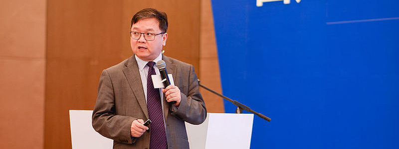

11月19日，由贝壳社主办，北大医学部主任、中国工程院詹启敏院士担任大会主席的"第六届Bio4P精准医疗创新论坛暨2016中国医健创新创业大会"今日在杭州举行。领袖级大咖及政府领导、专家学者、三甲院长、世界百强高管、顶尖创投大牛等近800位医健企业中高层和产业人士出席。
本次大会可通过网络在线直播的方式观看现场实况，欢迎点击以下直播链接观看：
视频直播：http://dwz.cn/4CXpRL
图片直播：http://dwz.cn/4CXp1t
英国帝国理工学院终身教授、帝国理工学院数据科学研究所所长郭毅可教授在现场演讲中介绍了其对于医疗大数据的认识，并介绍了其所在的帝国理工学院数据科学研究所在医学领域所做出的尝试。
谈到什么才是真正的医疗大数据，郭毅可教授表示，首先，医疗大数据首先要是关于人的数据，只有与人相关的数据才是医疗数据。其次，医疗大数据一定是多方面的，是关于人的完整的数据，比如说生活习惯数据、生物学特征数据、基因数据、蛋白数据，还包括你所在的环境数据等等。第三，这个数据要是用于理解健康，辅助诊疗的数据。郭毅可教授提到，在采集数据的过程中，保证数据的精准是重中之重。因此，数据采集过程需要合规化。
郭毅可教授强调，医学大数据是帝国理工学院数据科学研究所关注的重大研究课题。目前，研究所已经搭建起为医学服务研究的先进的平台，并且正在建设一支面向转化服务的团队。同时，研究所还构建了全新的、可扩展的、面向用户的精准医学信息学环境。
目前，帝国理工学院数据科学研究所正在与中国企业、项目进行密切的合作。
以上为嘉宾分享的现场实时速记整理，我们会以最快的速度为您带来大会最新鲜内容，下一场实况记录将在约40分钟后到达~敬请期待！